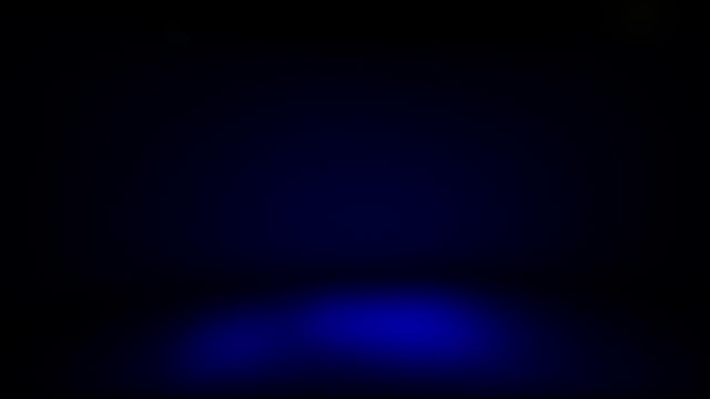
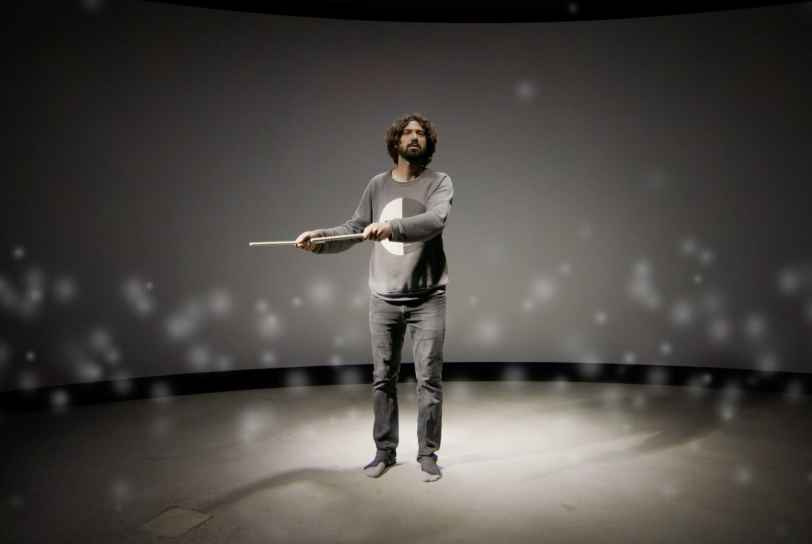

(Un)real-time
Project Description
(Un)real-time is a gestural performance for video telling the story through sound and movement of our past, present, and future relationship with technology. Paying homage to early sonic innovations such as the gramophone, the transistor radio, Morse code, the Theremin, the turntable, and the MPC, the piece investigates the line between listening and playing, between percussion and dancing, and between technology and magic. Composed through gesture and utilising historical recordings, (un)real-time is a provocation. What is real and what is unreal? When is unreal a compliment? When is real uninteresting? And what is a real-time ‘recording’?
This video piece is a collaboration between a co-composer/ sound designer , and a percussionist/ instrument designer who plays, dances, gestures and listens with (un)real instruments, (un)real technology and (un)real music-making – all in (un)real-time.
Type of submission
“NIMEs with a story”
Program Notes
(Un)real-time is a gestural performance for video telling the story through sound and movement of our past, present, and future relationship with technology. Paying homage to early sonic innovations such as the gramophone, the transistor radio, Morse code, the Theremin, the turntable, and the MPC, the piece investigates the line between listening and playing, between percussion and dancing, and between technology and magic. Composed through gesture and utilising historical recordings, (un)real-time is a provocation. What is real and what is unreal? When is unreal a compliment? When is real uninteresting? And what is a real-time ‘recording’?
This video piece is a collaboration between a co-composer/ sound designer , and a percussionist/ instrument designer who plays, dances, gestures and listens with (un)real instruments, (un)real technology and (un)real music-making – all in (un)real-time.
Media

▶Video of (Un)real-time


Still from (Un)real-time
(Un)real-time on YouTube
Ethics Statement
The authors of this submission have chosen to submit this performance video to reduce the environmental impact of international travel. The video is freely accessible online, and no new hardware was constructed or fabricated specifically for this performance. Audio samples were used in this performance under the local fair dealings laws in place of production.
Acknowledgements
The authors would like to thank TEDxSydney for the invitation to present this work and the Australia Council for the Arts for funding parts of this project.